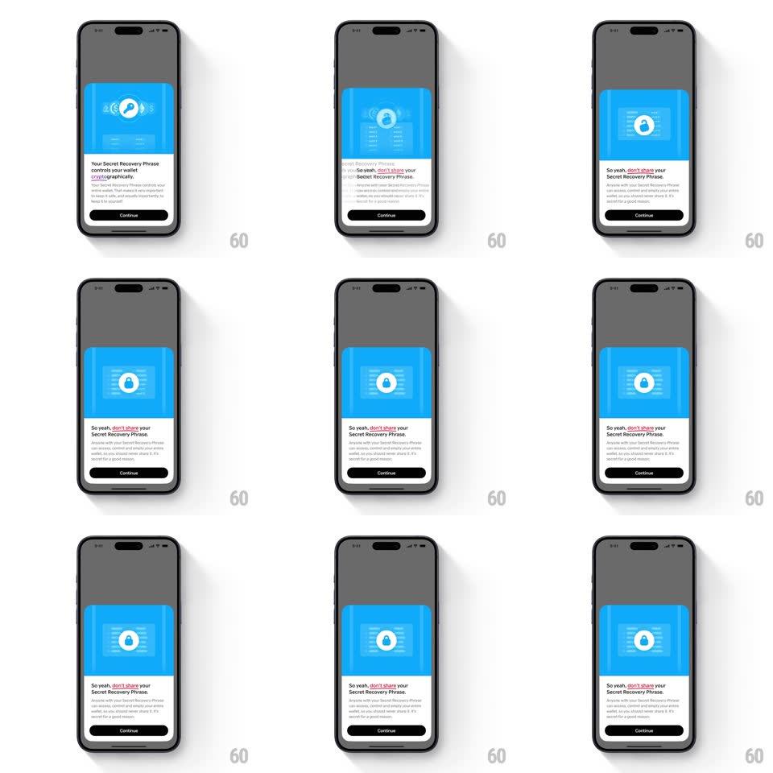

Media
Frame-by-frame

Rebuild this interaction 1:1: Family's key-to-lock morph - continuing past the recovery-phrase card morphs its blue header illustration: the central key and floating glyphs collapse inward and re-form as a locked padlock with a springy snap, matching the copy change to "So yeah, don't share your Secret Recovery Phrase."

Rebuild this interaction 1:1: Family's key-to-lock morph - continuing past the recovery-phrase card morphs its blue header illustration: the central key and floating glyphs collapse inward and re-form as a locked padlock with a springy snap, matching the copy change to "So yeah, don't share your Secret Recovery Phrase." ## Integration Integration: stack-agnostic spec - springs given as stiffness/damping, timed motions as duration + curve; map every value to your framework and animation library of choice. ## Scene Bottom sheet over a dimmed app: blue illustrated header panel, title, body, Continue button. Two illustration states: key-in-circle with floating glyphs (state A) and a padlock with radiating lines over a phrase-list backdrop (state B). ## Motion spec Pattern: illustration morph with springy snap. - Tap Continue: the key and its floating glyphs contract toward the center (scale 1 -> 0.6, fade, 200ms, ease-in) while the padlock elements gather from the same points. - The padlock snaps into place (scale 0.7 -> 1.08 -> 1, spring ~420/20, 300ms - a firm, satisfying pop) as its shackle clicks down in the final 80ms. - The backdrop swaps from the key's clean panel to a phrase-list panel behind the lock (crossfade, 250ms). - The title/body below morph in parallel (old text slides up and fades, new text rises in, 200ms, ~50ms behind the illustration). - The sheet's height and button stay fixed - only illustration and copy change. ## Calibration - The morph is centered - everything converges on and diverges from the panel's center point. - The snap is the character beat: stiff spring, one small overshoot, no ringing. ## Reduced motion Illustration and copy crossfade (250ms); no contraction or snap. ## Don't miss - The shackle's click-down lands after the body snap - a tiny two-beat ending. - The floating glyphs from state A become the radiating accent lines of state B - elements are reused, not replaced.